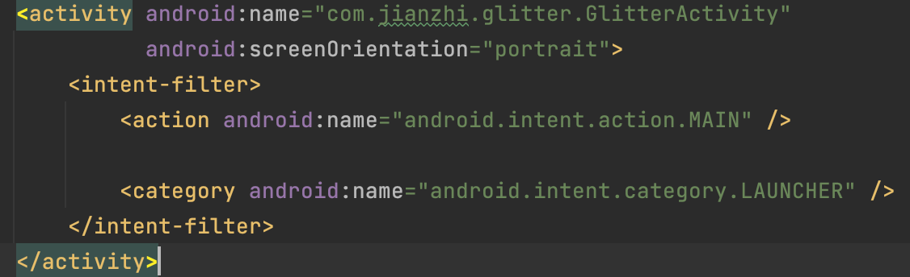
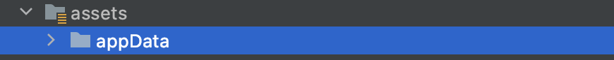

<!DOCTYPE html>
<html lang="en">
<head>
    <meta charset="UTF-8">
    <title>Title</title>
    <script src="../glitterBundle/ControlInstance.js"></script>
    <link href="../glitterBundle/bootstrap.css" rel="stylesheet">
    <link href="../fontawesome-free-5.15.4-web/css/all.min.css" rel="stylesheet">
    <script src="https://cdn.jsdelivr.net/npm/marked/marked.min.js"></script>

    <link rel="stylesheet" href="https://cdnjs.cloudflare.com/ajax/libs/highlight.js/10.7.1/styles/atom-one-dark.min.css">
    <script src="https://cdnjs.cloudflare.com/ajax/libs/highlight.js/10.7.1/highlight.min.js"></script>
    <!-- and it's easy to individually load additional languages -->
    <script src="https://cdnjs.cloudflare.com/ajax/libs/highlight.js/10.7.1/languages/go.min.js"></script>
</head>
<style>
    html{
        user-select: text;
        -webkit-user-select:text;
        height: 100%;
        background-color: transparent;
        width: calc(100% - 20px);
        overflow-y: scroll;
        margin-top: 20px;
        text-align: left;
        padding-top: 50px !important;

    }
    body{
        width: 100%;
        transform: translateX(-50%);
        left: 50%;
        position: relative;
        user-select: text;
        -webkit-user-select:text;
        max-width: 800px;
        height: 100%;
        background-color: transparent;
    }
    span{
        font-size: 15px;
        letter-spacing: 1px;
        color: #233659;
    }
    .js{
        text-align: left;
    }
</style>
<body>
<script>
    lifeCycle.onCreate=function (){
        hljs.highlightAll();
    }
    lifeCycle.onCreateView=function (){
        return `
        <h3 style="font-size: 39px;font-weight: 400;">Add Dependencies <span>\t\tSupport jcenter</span></h3>
    <div style="height: 1px;width: 100%;background-color: whitesmoke;margin-top: 20px;margin-bottom: 20px;"></div>
    <a onclick="glitter.openNewTab('https://github.com/sam38124/Glitter_Android')" >Github resources</a>
 <div style="height: 1px;width: 100%;background-color: whitesmoke;margin-top: 20px;margin-bottom: 20px;"></div>
    <br>
 <span>Step1. Add into your build.gradle</span>
   <br>  <br>
 ${glitter.share.code.kotlin(`allprojects {
\t\trepositories {
\t\t\t...
\t\t\tmaven { url 'https://jitpack.io' }
\t\t}
\t}
`)}
  <br>
<span>Step2. Add into your dependencies</span>
   <br>  <br>
   ${glitter.share.code.kotlin(`dependencies {

    implementation 'com.github.sam38124:Glitter_Android:2.5.3'

}
`)}
        <div style="height: 1px;width: 100%;background-color: lightgray;margin-top: 20px;margin-bottom: 20px;"></div><br>
        <span>Step3.Config AndroidManifest</span><br><br>
       
        <br><br>
        <span>Step4. Initial  and set up glitter in your application</span>
          <br>  <br>
        ${glitter.share.code.kotlin(`  class MyApp :Application(){
    var handler= Handler()
    override fun onCreate() {
        super.onCreate()
        GlitterActivity.setUp("file:///android_asset/appData",appName = "appData")
        GlitterActivity.addJavacScriptInterFace(JavaScriptInterFace("getDeviceType"){
            request ->
            //Get data from javascript
            val message=request.receiveValue["message"]
            //Will response i am glitter
            Log.e("message",message.toString())
            //Response value to javascript
            request.responseValue["data"]="Android"
            //Execute Callback
            request.finish()
        })
        //_hashKey()
    }}`)}
         <br>
 <span>Step5. Copy your gliiter project to asset rout</span>
          <br>  <br>
            
`
    }
</script>
</body>
</html>

